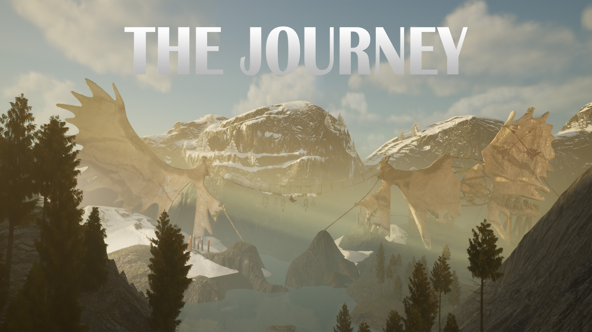

// SOURCE DIRECTORY // ACTIVE SPECIMENS
Active Project Dossiers
ID: EM-CMP // PRIMARY_EXHIBIT
[FEATURED WORK]

PROJECT: CREATIVE MEDIA PROJECT — THE JOURNEY
Fallen Moose Antler Highlands
"you have just stumbled across giant fallen moose antlers in the canadian highlands . Do you choose to cross the path to complet the journey?"
ID: EM-01 // SUBDIVISION_MODEL
[01/03]

Procedural Botanical specimen topology
Analyzing complex geometry flow and high-precision rigging models. Purpose built to exhibit pristine surface topology and optimization metrics in Maya and Substance.
ID: EM-03 // REFERENCE_CAPTURE
[02/03]

Terrestrial Macro reference maps
Captured reference library of dry organic materials. Utilized in constructing displacement and scattering layers for 3D sculpt models.